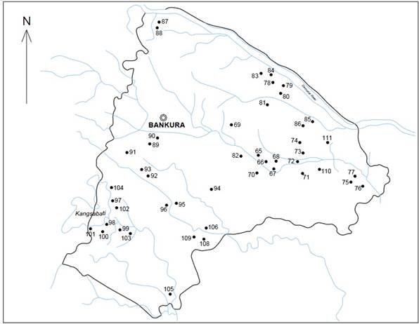

Jain Remains of Ancient Bengal
by Shubha Majumder | 2017 | 147,217 words
This page relates ‘Archaeological sites in Bankura District’ of the study on the Jain Remains of Ancient Bengal based on the fields of Geography, Archaeology, Art and Iconography. Jainism represents a way of life incorporating non-violence and approaches religion from humanitarian viewpoint. Ancient Bengal comprises modern West Bengal and the Republic of Bangladesh, Eastern India. Here, Jainism was allowed to flourish from the pre-Christian times up until the 10th century CE, along with Buddhism.
Go directly to: Footnotes.

4.12. Map of Bankura district showing the important sites mentioned in the text
65. Dharapat:
The site is located on the northern bank of the river Dwarakeswar, about 8 kms north-east of Vishnupur town. The site has a śikhara -type temple, locally known as Nengta Thakurer Mandir (the temple of the naked god) or Shamchand Thakurer Mandir. The former name is probably derived from the images of the Tīrthaṅkaras on the northern and western temple walls (Chattopadhyay 2010: 166). During our present survey we could identify these two Tīrthaṅkara images as that of Ṛṣabhanātha and Śāntinātha. An image of Viṣṇu is also fixed on the outer wall of the temple. The temples of Dharapat have been studied by several scholars (Chaudhuri 1950: 296-298). However, the identification of the temple idiom, whether Brahmanical or Jaina, is still uncertain. Just opposite this temple, a beautiful image of Tīrthaṅkara Pārśvanāth is kept in a modern temple and locally worshipped as Viṣṇu, this Jain image was transformed into that of a snake-hooded Viṣṇu (Lokeśvara Viṣṇu).
66. Jay Krishnapur:
The site is located on the northern bank of the river Dwarakeswar and is about 5.5 kms north of Vishnupur, on the SonamukhiVishnupur road. The recent survey noticed, besides a cluster of late medievalpre-modern temples, that the village has some debris of late habitational remains alomg its north-eastern part (Singha 1384 BS: 68 -108; Chattopadhyay 2010: 166). From these ruins, some antiquities of early medieval and medieval period have been recovered. A few sculptural remains related to the Jain ideology are preserved in the Vangiya Sahitya Parisad Museum, Vishnupur. Among these, the most notable specimen is a greyish stone caumukha.
67. Muninagar:
The site has some modern temples built over the old habitational ruins. Present study of the Basulimata idol enshrined in the Basuli temple revealed that it is actually a Tīrthaṅkara image. Some other Jain sculptural fragments are also kept in this temple complex and they are all worshipped as Brahmanical icons. This area needs further investigations so as to get more supportive evidence in elucidating the actual context of the said sculptural remains and their association with Jainism. The initial spread of Jain ideology in this region is very much clear. This example is a clear indication of the transformation of a Jain deity into a folk deity.
68. Penara:
In the western part of this village there is a locality known as Brahman para having a concentration of Brahman communities. In this connection it may be recalled that during the early medieval and medieval periods, Utkala Brahmans migrated in large numbers from Orissa to the Rāḍha region. The recent exploration at the site documented a Jain Tīrthaṅkara image which is worshipped as Kali mātā in this locality. The change of identity from a Jain deity to Kāli mātā is noteworthy especially in the context of the spread of the Sakti cult in the Rāḍha region. It must be noted that such transformations and changes have been executed on several occasions only on Jain images.
69. Ajodhya:
The present site is located on the northern bank of the river Dwarakeswar and is about 11.3 kms north-west of Visnupur town. It is well known for its local tradition of studying Sanskrit manuscripts from the medieval period onwards. A fisherman discovered a sandstone image of Tīrthaṅkara Ṛṣabhanātha from the nearby river bed of Dwarakeswar and it is now displayed in the VSPM, Visnupur (Chattopadhyay, R.K., S. Ray, & S. Majumder 2011-12 & 2012-13: 128-29). This village has a fair distribution of scattered sculptural remains, however, the Jain connection is yet to be established.
70. Dwarika:
The present site is situated close to the northern fortification wall of Vishnupur town. It is believed that during the Malla rule the village was settled by those who were in charge of gate keeping (Dvārapāla) of the Malla capital. The village has a few brick temples of the Malla period. In the center of the village there is a temple of Pāsān Kāli mātā (Mitra 2010). The Pāsān Kāli deity is actually the image of a Jain Tīrthaṅkara later transformed into a Brahmanical deity.
71. Joypur:
It is a forested locality along the Vishnupur-Kotulpur road, approximately 10 kms from Visnupur. Sculptural remains, mainly Jain images, are frequently reported from this area. Two Tīrthaṅkara images discovered from this site are presently exhibited in the VSPM, Visnupur.
72. Salda:
This is a fairly large village full of sculptural as well as architectural fragments, lying at a distance of 15 kms from Vishnupur town, south-east of the Kotulpur-Vishnupur road and 3.2 kms south-east of Joypur. The village is divided into two halves, known as Upar Salda (Upper Salda) and Nmo Salda (Lower Salda). O”Malley (1908: 173) was the first to highlight the archaeological importance of Salda. In his report, he has described the old temple remains of Salda and Gokulnagar, a village adjoining Salda. Most of the earlier reports (French 1928: XII-XIII; Banerji 1929: 641-42; Bandyopadhyay. 1971: 117) of the site have mainly highlighted the temples without elaborating on other antiquities. Besides the late medieval temples, there are a good number of sculptural antiquities recorded from different places of the village. At a distance of about 100 meters through the same village road, one reaches the dilapidated and unfinished small brick templestructure where the folk-deity Basuli is worshipped. In this temple (known as Basuli Mandir) two images of Basuli and an uncertain Tīrthaṅkara are enshrined. The upper portions of these installed images are visible while their lower parts are buried under the earth (Chattopadhyay 2010: 167-68).
73. Gokulnagar:
The village is located about 1 kms south of Salda and well known for the 17 th century laterite pañca-ratna shrine of Gokulchand, besides an interesting image of the Varāha incarnation of Viṣṇu. An image of Anantaśayana Viṣṇu which is now preserved in the VSPM, Vishnupur, was originally found from the Gokulchand Temple, Gokulnagar. An image of the 22 nd Tīrthaṅkara Neminātha now housed in the same museum was actually recovered from this village. Some other sculptural fragments associated with the Jain ideology, lie scattered in this village (Chattopadhyay 2010: 168).
74. Kumbhasthal:
The village is very close to the Salda, on the way to Joypur. A single piece of Jain Tīrthaṅkara image is now worshipped in the house of a local villager (Chattopadhyay 2010: 168-69). Besides this image, we also noticed some other architectural remains scattered across different localities of the village and these archaeological remains along with an image of Ṛṣabhanātha are enough to elucidate the religious identity of the site which is mainly Jain in character.
75. Kotulpur:
The present site having the Police Station headquarters is situated on the Vishnupur-Arambagh road, about 3.5 kms east of Vishnupur town. Apart from the structural remains of late medieval period, a good number of antiquities including an image of Tīrthaṅkara Ṛṣabhanātha (Chattopadhyay 2010: 168-69), which is carelessly placed amidst a thick bamboo grove and worshipped as a Brahmanical deity, datable to circa 10 th 12 th centuries CE were recovered from around the locality. We documented a highly abraded image of a Jain tutelary couple of greyish stone from this site which is presently worshipped in a house of this village. A miniature stone votive shrine of circa 10 th century CE was reported (IAR 1983-84: 172) from the present site.
76. Sihar/Shihar:
This village, famous for the Śāntinātha Śiva temple, is about 2 kms from Jayrambati, on the Kotulpur-Kamarpukur road. The image worshipped as Śāntinātha Śiva is actually a beautiful stone image of Tīrthaṅkara Śāntinātha (Singha 1390 BS: 13). Besides, a doubtful image of the same Jina reported from this site is now in the collection of the VSPM, Vishnupur.
77. Bhagalpur:
The present site is situated along the left bank of the river Dwarakeswar and close to Kotulpur. A good numbers of sculptural remains were reported from the site. Some stone images are kept under a pipal tree in the western side of the village. Among these sculptural specimens (one herostone, two fragmentary specimens of the upper part of Viṣṇu image and a broken head of a deity) the most noteworthy specimen is the image of the Jain Tīrthaṅkara Mahāvira (Chattopadhyay 2010: 166-67). We also documented two badly damaged Jain aṣṭāpadatītha sculptures from this sculptural assemblage. The site needs more details as well as extensive survey to understand the religious nature of the site and its association with Jain ideology.
78. Sonamukhi:
It is a municipal town having the Police Station headquarters is situated about 34 kms north of Vishnupur and 42 km northeast of Bankura town. The site flourished as an important center under the patronage of a local Zamindar who was under the Vishnupur Raj (Chattopadhyay 2010: 170). The remains of that time are still found in the form of several brick temples decorated with terracotta plaques. Two stone images, including a unique image of Tīrthaṅkara Ṛṣabhanātha, is noticed in Shyamamayi temple situated in the centre of the village. The image of the Jina is presently worshipped as a Brahmanical deity and is made of blackish stone possibly quarried from the neighbouring Rajmahal hills of Bihar. Presence of this image indicates that this small town had a long religious history and Jainism was flourishing during the ninth -tenth century CE.
79. Chuyamosne:
This is a well-known village, popularly known for its Kapileswar Śiva temple, situated about 18km south of Sonamukhi and 1km south of Jayrampur more. In the Ganguli para of this village, a Jain votive shrine (caumukha) is presently kept in a modern temple and regularly worship as Śiva liṅga. We also notice some low structural mounds and stone architectural members. These archaeological remains must be associated with Jain ideology.
80. Madanpur/Jaynagar:
The site is located about 2.5 kms from Pakhanna, along the southern bank of the river Damodar. This site is well known for its decorated terracotta temple of the Malla period. An image of Tīrthaṅkara Mahāvira (Chattopadhyay 2010: 170) was reported from this site. During our exploration we noticed that the find-spot where this Tīrthaṅkara image is kept known as Kalbhairavtala, close to the river the Damodar, is scattered with potsherds and other types of objects of folk-cult such as terracotta elephants, horses, Manasāghats (Pots made for Manasā Pujā) etc (Pl.VI.A). This place is now covered with dense jungles and we believe that this place bears the ruins of early medieval period. Without excavation it is very difficult for us to understand the exact nature of this find-spot as well as the proper context of the Tīrthaṅkara image. However, it is obvious to mention here that the religious identity of the site is mainly Jain in character.
81. Radhamohonpur:
It is a large village about 3.5 kms north-east of the Bondal hati bus stop on the Sonamukhi-Durgapur (via Rangamati) road. A modern temple locally known as Buddha Mandir has a sculpture of Tīrthaṅkara Ṛṣabhanātha (Chattopadhyay, Ray & Majumder 2011-12 & 2012-13: 137). Presently the deity is worshipped as Buddhaśvar Śiva. According to the villagers, the sculpture was collected from the bank of the river Damodar in the Bengali year 1328. The find-pot is also close to another local Siva temple known as Baleswar Mandir. Maghi purnima is the date of the annual celebration of the deity “Buddha”. Fairs and festivals are organized during that time.
82. Bahulara:
The present site is situated 3miles north-east of Onda town and at a distance of 12miles from Bankura town. Located on the right bank of the river Dwarakeswar, this village is well known for its large brick-built śikhara type temple known as Siddheśvara temple–one of the finest and largest brick temples of Bengal. This temple site has been reported by several scholars [1]. The temple enshrines a Śiva liṅga which is locally known as Siddheśvara. Besides the Śiva liṅga, the sanctum has also yielded images of Mahiṣamardinī, Gaṇeśa and Tīrthaṅkara Pārśvanātha (Chattopadhyay 2010: 156; Chattopadhyay, Ray & Majumder 2011-12 & 2012-13: 137-38). Here, we also notice 23 small circular and rectangular brick stūpa basements. The relationship between the stūpa basements with the extant temple is debatable. However, these stūpa basements along with the Pārśvanāth image and other Jain sculptural fragments lying under a tree in the temple compound suggest a strong association of the site with the Jain ideology (Pl.IV.B).
83. Pakhanna:
It is a well-known archaeological site in West Bengal. Successive excavations [2] at the several mounds of the site have revealed a long chrono-cultural sequence starting from pre-metallic early village farming to early medieval period (Pl.IV.C). This ancient site is situated on the south/right bank of the river Damodar and about 10 kms. from Barjora Police Station headquarter. Besides its significant early historic remains, Pakhanna has yielded some Jain sculptural specimens which may be dated to eleven -twelfth centuries CE. These Jain images are presently worshipped as local deities which have been installed at several places like Rakkhakalitala, Dharmarajatala (Hattala), Manasatala (Kalyanpur) and Sivtala (Poddarpara) of Pakhanna.
84. Hat Asuria:
The village is located about 6 kms from Barjora town on the Durgapur-Sonamukhi via Rangamati road. It has yielded a stray find of a Jain votive shrine (caumukha) on a low mound at the eastern end of the village. The lower part of the finely executed specimen is buried under the earth (Chattopadhyay 2010: 158).
85. Patashpur:
The site is located in the vicinity of Hadal-Narayanpur village on the bank of the dried up bed of the river Damodar. Archaeological importance of the site is amply highlighted by the old habitational remains and a stone sculpture of Tīrthaṅkara Ṛṣabhanātha (Chattopadhyay 2010: 156; Chattopadhyay, Ray & Majumder 2011-12 & 2012-13: 139), presently worshipped as a village deity (Gramdevata). The find spot of the image is surrounded by bamboo groves. Our general observation is that the image was installed during a later period and in all probability the specimen had been transported from some other place in its neighbourhood. During the present exploration in the village we noticed few potsherds and other habitational debris; however, we failed to trace any other evidence related to Jain religious establishments in the present village.
86. Hadal-Narayanpur:
The site is about 8 kms, as the crow flies, north of Patrasayer town. The site actually denotes two villages –Hadal and Narayanpur. Some of the ruined temples still contain terracotta plaques of the Vishnupur type. Besides the antiquities of late period, the village has some sculptural remains which probably belong to the early medieval-medieval periods. The sculptural remains include the images of Jain Yakṣa - Yakṣiṇī (Jain Tutelary Couple), Śiva liṅga, an image of Pārvatī and a number of small unidentified images related to the Jain ideology (Chattopadhyay 2010: 16970; Chattopadhyay, Ray & Majumder 2011-12 & 2012-13: 139-40). These sculptures are housed in a modern temple at Dakshinpara and the area is known as Brahmanipara.
87. Biharinath hill:
An isolated largest hill in the district situated in the north-west corner of Saltora Police station. One can approach the northern slope of the hill from village Tiluri which is about 4.8 kms east. There is a temple enshrining a Śiva liṅga lying on the north slope of the hill. The modern temple of Śiva, known as Biharinath, was built upon the ruins of a brick-built structure of an older shrine (Pl.IV.D). In this temple complex there is a flatroofed temple containing the images of snake hooded Viṣṇu, Tīrthaṅkara Pārśvanātha and an inscribed lion (Chattopadhyay 2010: 158). The image of Pārśvanātha is highly abraded and it indicates that during the early medieval period it was probably a Jain centre. The presence of twelve-armed snake hooded Viṣṇu in this complex testifies that this Viṣṇu image was influenced by the Jain religious ideology.
88. Tiluri:
It is located about 8 kms north-west of Saltora town, near the western foothill of Biharinath. At a central place of the village, there is a heap of broken sculptures mainly associated with Jain ideology. An image of Tīrthaṅkara Candraprabha has been recovered from this heap (ibid.). Besides these sculptural fragments we also recorded some unique decorated architectural fragments from this site.
The distance between Biharinath and Tiluri is not considerable and both the sites have yielded Jain sculptural remains. It may be assumed that both the sites were considered as tīrthas (sacred places) by the Jain community.
89. Balarampur:
The site is located under the jurisdiction of Saltora Police Station and about 1km south-east of Saldiha College-campus and nearly 1.5 kms from Brahmandiha towards Indpur. In this village there is a place under a Bat tree known as Gajantala where a Śiva liṅga has been installed by the villagers. A heap of contemporary terracottas, viz. horses, elephants, Manasāghaṭs etc. are lying under the tree on a high platform. A careful scrutiny of the heap resulted in the discovery of a Jain votive shrine or caumukha (ibid.). The specimen, although not well-preserved, may be assigned to c. 12 th -13 th centuries CE. It is worshipped by the villagers as an image of Buddha.
90. Jorda (Bara Jorda):
This is an ancient settlement situated about 5 kms east of Brahmandiha, towards Indpur. In the western end of the village there is a place known as Brahmasthan, where we have found two squareshaped brick temples constructed over the ruins of ancient brick foundation. Some stone sculptures and a hero stone (Vīrastambha) are fixed on the temple walls (ibid.). The architectural ruins and the sculptural remains seem to belong to the early medieval period. Among these sculptural specimens some are associated with Jain religious ideology and it suggests that during the early medieval period Jainism also flourished in this area. However, at present all these Jain images are worships as Brahmanical deities.
91. Junbediya/Junbedya:
The site is situated on the left bank of the river Silavati and 10 kms west of Indpur on the Indpur-Malian bus route. The river flows along the north-western border of the village. On the north-western side of the village, close to the river, is a high mound measuring approximately 100 feet in height from the river bed and 500 square feet in breadth. At the top is a modern temple, known as Buddha Mandir, erected on the ruins of an old structure. Inside this temple some earlier stone images are kept (ibid.:159) and among these sculptural assemblages we documented a dhyāni image of an unidentified Tīrthaṅkara. This image is very badly eroded and defaced.
92. Namo Kechanda/Choto Kechanda:
On the north bank of the river Silavati the present village lies about 1km south of Govindapur. Local villager Dvijapada Tunga found a Tīrthaṅkara image along the river bank of the adjoining village (ibid). Besides this image, during our field visit in this village we documented some archaeological ruins consisting of potsherds and other fragments of artefacts of late period.
93. Jiorda:
This small village is situated about 5 kms south-west of Bheduasol and 10 kms south-west of Indpur on the Indpur-Khatra road. To the southern end of the village, towards the river bank of Silavati, there is a place of worship known as Sakrasinitala, village-deity. In this place two sculptural fragments are kept and are being worshipped as the folk-divinity Sini by the local people (ibid.: 160). Among these two specimens one could be identified as the broken part of Tīrthaṅkara Pārśvanātha.
94. Deulbhira:
This famous temple site lies on the left bank of the Jaypanda River, 10 kms as the crow flies, south-east of Taldangra police station. This beautiful Orissan śikhara variety temple is located in the centre of the village. From stylistic considerations, it bears a close resemblance to the more renowned temples at Sonatopal, Bahulara, etc. R. D. Banerji collected a beautiful stone seated image of Tīrthaṅkara Pārśvanātha from the temple (Saraswati 1943: 465; Banerji 1968: 534; Bandyopadhyay1971:56-57; Chattopadhyay 2010: 160). This image is now in the Indian Museum, Kolkata.
95. Harmasra:
Another important temple site is situated about 20 kms from Bankura town under the jurisdiction of Taldangra. The village of Harmasra is about 12 km. from Ratanpur. The river Silavati flows about 3 kms south of the village. The principal attraction of the village lies in its archaeological remains consisting of a fine laterite śikhara temple (Pl.IV.E) generally known as the Jain temple of Chhotanagpur (AR-ASI 1925-26:114-115; Bandyopadhyay 1971: 133-134; Banerji 1968: 540-541; Banerji 1980 (Reprinted): 150-155; McCutchion 1967: 157; Chattopadhyay 2010: 160). Besides this temple, three Jain sculptures were also recorded from this site. All these Jain sculptures may well be assigned to eleven-twelfth centuries CE.
96. Sulgi:
This site is situated on the bank of the river Silavati under the Taldngra Police Station and it is an uninhabited mouza, covering an area of 370.10 acres. Sulgi was first noticed and reported by J.N. Bandyopadhyay, the former District Information Officer, Bankura. He brought to our notice, besides Puri - Kushana coins, two fragmentary stone sculptures, an image of a Jain Tīrthaṅkara with his Śāsanadevī and a number of potsherds, earthenmoulds and terracotta objects of late period (Bandyopadhyay 1980: 535-538).
97. Paresnath:
This is an important archaeological site however, due to the construction of the Kansavati dam, the major area of the village is presently submerged in the waters of Kumari -Kansavati. The site is situated is about 7 kms north-west of Ranibandh and about 4 kms west of Ambikanagar. There are a few small hills around this locality. A small hill close to the village is named Paresnath and it is presently a part of the bank of the water -reservoir. Just near the locality there are ruins of a temple made of red stone. During the construction of the dam the area had been considerably affected. At the top of the Paresnath hill there is an open temple dedicated to lord Śiva. Besides the liṅga itself, a good number of sculptural remains including two images of Pārśvanātha (Pl.IV.F) are lying in and around the Śiva temple (Chattopadhyay 2010: 162). All the specimens are said to have been collected from the neighbouring places including the submerged temple site of Sarengarh.
98. Ambikanagar:
This well known archaeological site is located near the confluence of the rivers Kumari and Kansavati, about 16 kms south-west of Khatra and about the same distance north-west of Ranibandh. This site was also affected by the construction of the Kansavati Dam. Exploration undertaken by archaeologists recorded specimens consisting of early historic potsherds, architectural and sculptural remains etc. Mitra (1958: 131-132) carried out an extensive survey that resulted in the discovery of Jain images and temples which are still extant. Besides the temple ruins at Sasthitala or the place in and around the modern temple of Ambikā, a few stone sculptures belonging to eleven-twelfth centuries CE have also been recorded. This was perhaps a reasonably important religious centre. Mitra observed that the village was a thriving Jain centre which is proved by the existence of a good number of remains relating to the Jain pantheon. Apart from the sculptural and architectural relics, the western end of the village is known to be replete with potsherds, iron slags and other remains (Chattopadhyay 2010: op. cit.). Of these, the potsherds appear to be belonging to the medieval period. The river cliff section shows thin deposition of old remains from which a few potsherds of the early medieval period have been collected. The present sitereport will be incomplete if we do not mention that Ambikanagar is virtually a part or extension of another important site, Tulsipur. The settlement history of the area wherein one can locate both the sites presents an extended chronocultural sequence ranging from Black and Red Ware associated Early Village Farming phases to the late medieval period or later. Precisely speaking, the habitational area of Ambikanagar starts from the extended part of the Tulsipur mound in which one can locate the concentration of Doms, hence Dompara. Further excavations at Dompara will certainly unfold a relationship and connection between the settlements of Tulsipur and Ambikanagar.
99. Barkola:
The site lies is about 4 kms east of Ambikanagar and is quite rich archaeologically. A good number of antiquities mainly comprising ruins of Jain temple and three stone images, two votive shrines (caumukha), a stone pedestal and another fragment of Jain image have been recovered from the site. Mitra (1958: 132-133) visited the place for documentation of the remains. She also documented the ruins of a brick-built Jain temple at this site. The foundation of the temple has been the target of brick-hunters. At present only a heap of brick-bats remain of the original structure.
100. Chiada/Navachiada:
The modern locality Navachiada is almost opposite to Pareshnath, situated on the south bank of the Kumari river. Navachiada is the settlement which is shifted from old Chiada after the Kansavati reservoir inundated the old settlement. Mitra and Krishnaswami explored the old settlement of Chiada, which is at present submerged. Krishnaswami (1959-60: 50) reported historic remains besides prehistoric artefacts from the site. Mitra also visited the old site during the construction of the dam. Her report includes the description of Jain images. Mitra (1958: 134) states: “At the western end of the village, not far from the river bank, are three sculptures lying in the open. None of them is in situ. One of them represents the figure of a Tīrthaṅkara (ht. eleven and a half feet, without tenon) flanked by an attendant on both sides of his legs. On the right side of the back-slab is the smaller figure of another Tīrthaṅkara. The sculpture is greatly abraded, with the result that the cognizance is unidentifiable.” The present exploration at Navachiada resulted in the recovery of two stone sculptures preserved in a modern Śiva temple of the village. (Chattopadhyay 2010: 163).
101. Rudra:
It is a prosperous village lying on the Bankura-Purulia border, about 1.5 kms south of Hasadungri (Chattopadhyay 2010: op. cit.). Near the market place (Hat- tala) of the village, there is modern temple dedicated to lord Śiva and inside this temple a damaged specimen of Jain Tīrthaṅkara image is noticed. Besides this specimen, we also recorded two parts (upper and lower) of a snake hooded Viṣṇu image from the market area of the present village.
Miscellaneous stone sculptures from the Kansavati Reservoir area (Police Station Ranibandh): Besides the above recorded archaeological remains from the Kansavati area in the Police Station of Ranibandh, the Panchmura College library (Police Station Taldangra) possesses a collection of stone sculptures and other antiquities collected from different parts of Bankura. Among these stone sculptures, three specimens were acquired from the Kansavati dam area. These include two Tīrthaṅkara images and an unidentified female deity (ibid). Apparently, this area was dominated by Jain sects. On stylistic grounds, the architectural parts of the ruined temples and sculptural remains bear close affinities with the Orissan architectural and sculptural styles.
102. Chitgiri:
The present site is located on the north bank of the Kansavati at the point of its confluence with the Kumari. At present the village has no archaeological remains of special significance. Mitra, however, reported a few sculptural and architectural relics from the site in her earlier survey. “Here existed once a red sand-stone temple, now denuded completely beyond recognition. Two images, one of ekamukha-liṅga and the other of a Tīrthaṅkara are now lying over the scanty remains” (Mitra 1958:132).
103. Kechanda:
It lies about 7 kms from Khatra towards Ranibandh on the Khatra-Ranibandh road. The Kansavati flows due south of this area. The place is not very far from the Kansavati reservoir. R.D. Banerji (1929: 644) reported the sculpture of a Jain śāsanadevī or Yakṣiṇī which is still lying in the village and worshiped as a Brahmanical deity.
104. Kendua:
The site is situated about 1.5 kms north of the Kansavati river, on the upper reaches of the dam and about 9 kms from Ambikanagar. The site was first reported by Mitra (1958: 134). The entire area around Kendua is strewn with lithic architectural fragments, comprising huge āmalaka, khapuri, khurās haped stones and door-jambs. A large number of stones have been utilized in the construction of a modern roofless structure for the enshrinement of a liṅga. A complex of ruined brick-structures was also observed. According to Mitra, the stone temple most probably enshrined Pārśvanātha, as an image of that Jina lies near it. There are a few fragments of a torso and parts of a leg etc. lying near the image (Chattopadhyay 2010: 163164).
105. Satpatta:
Satpatta lies south of the Police Station headquarter of Raipur. It can be reached along a country road about 3 kms long, running east from Mandalkuli on the Raipur-Silda road. In the centre of the village is a ruined temple and a modern temple was constructed in front of this ruined structure. This modern temple contains some remarkable Jain sculptural remains which were originally found from the ruined temple complex (Chattopadhyay 2010: 165). These Jain sculptural remains suggest that the site had some earlier association with the Jain ideology.
106. Simlapal:
It is located about 37 kms south of Bankura. A major part of the village is surrounded by the river Silavati. Simlapal is the seat of a local Zamindar who had originally come from Orissa. The remains of the Zamindari and their successors still exist. There are many popular legends about the local Zamindar family –suggesting their claim to have ushered in this area a large number of Orissan population. According to a tradition, the place was the capital of a kingdom of Tungabhūm comprising parts of Raipur, Simlapal and Taldangra Police Stations during the middle of the fourteen century CE. However, the temple in the palace-courtyard of the local Zamindar contains terracotta plaques (similar to the terracotta plaques of the Vishnupur temples) along with a collection of stone sculptures including Brahmanical and Jain gods and goddesses assignable to the early medieval period (ibid). Five specimens of different Jain deities are fixed on the temple wall. Besides, there is a ruin of an old temple structure lying near the Muslim graveyard (mazhār) at the south-eastern part of the village.
107. Ramnagar:
The village lies on the north bank of the river Silavati at a distance of about 1.5 kms east of Simlapal. It is a small locality and contains shrines of late period. Early medieval sculptural remains have been recorded from the house of a villager Kirthibhusan Singha babu. These include two Jain images along with some other sculptural fragments. According to the villagers, in the past there were a good number of other architectural and sculptural specimens scattered over a modern temple site in the village.
108. Layek Para:
This is another small village with archaeological relics, situated 5 kms east of Simlapal. In this village we documented a low structural mound near the Palli Mangal office and a beautiful image of Tīrthaṅkara Pārśvanātha lying in the courtyard of the house of Shyam Dhamat Kundi Babu.
109. Ghotra:
The site Ghotra is situated just 1km west of the Layek Para. In this village a small image of Jain Śāsanadevī or Yakṣiṇī Ambikā and other architectural remains are kept inside a modern temple situated in the Primary School complex.
110. Lakshmisagar:
A good number of sculptural specimens and a few architectural fragments mainly constitute the archaeological remains of the site of Lakshmisagar, situated under the Police Station Simlapal. These sculptural remains are found from a place of local worship known as Rankinitala. The site may be associated with a religious establishment. Besides such scattered sculptural fragments in and around the compound wall of the temple, an image of Ṛṣabhanātha is seen installed under a tree which is in close proximity to the said complex (Chattopadhyay 2010: 167). The presence of historical relics in this area could be visualized in terms of a growth of settlements (both secular and religious) in the interior localities of the upland of Bankura. The region is surrounded by woodlands.
111. Alkadhara:
It is a small village under Police Station Simlapal. Besides a beautifully carved image of Mahāvira found from a place which is just opposite to a primary school, the village has some other find-spots which could be associated with ancient religious establishments (Ibid). This area demands further investigations.
Footnotes and references:
[1]:
Beglar 1878: 201; Saraswati 1943: 1979; Chaudhuri 1950: 49-51; Bandyopadhyay 1965: 138-39; McCutchion 1967: 156; Banerji 1968: 520-523; Ghosh 1976: 360-64.
[2]:
Pakhanna was taken up for excavation by the Department of Archaeology, University of Calcutta, under the general supervision of Chitrarekha Gupta, A.C. Pal, M. Mitra and A. Datta from 1996-97 to 1999-2000 (IAR 1996-97: 177-178; 1997-98: 200-203; 1999-2000: 197-198) and by the author and A. Datta again from 2001-03. Five main areas, viz. Bhairabdanga (PKN 1), Satbardanga (PKN 2), Garherdang or Rajargarh (PKN 3), Kalyanpur (PKN 4), Itepara (PKN 5) were excavated.
Let’s grow together!
I humbly request your help to keep doing what I do best: provide the world with unbiased sources, definitions and images. Your donation direclty influences the quality and quantity of knowledge, wisdom and spiritual insight the world is exposed to.
Let’s make the world a better place together!
|
Like what you read? Help to become even better:
|